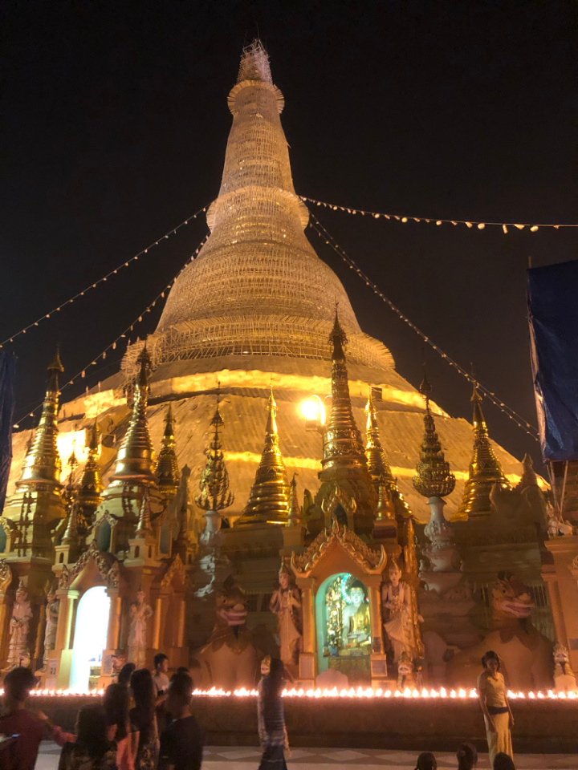
ミャンマー Grand Guardian Tokio Marine 合弁設立（2019年）
東京海上日動火災保険と、シュエタング・グループ傘下の Grand Guardian Insurance Holding によるミャンマーでの損害保険合弁会社「Grand Guardian Tokio Marine General Insurance（GGITM）」設立の記録14点。三木晋吉が東京海上アジア統括として設立を主導しました。2019年4月30日にヤンゴンのパンパシフィック・ホテルで両社の調印式が行われ、同年11月28日にミャンマー当局の設立認可を取得（東京海上日動が15％出資）、12月に日本生命との生命保険合弁 Grand Guardian Nippon Life とあわせて営業を開始しました。収録内容は、2019年3月10日のシュエダゴン・パゴダ（全景、参拝、献水）、4月30日の調印式での署名と調印書の交換、12月3日のオフィス開設に伴うテープカットと開所式、そして Business Launch Celebratory Dinner の舞台、ミャンマーと日本の民族衣装をまとった出演者の皆さまとの記念撮影、会場での記念撮影、両社関係者による集合写真。ミャンマー国営の Myanmar Digital News は12月4日付で開業式典を報じ、出席者として東京海上日動火災保険代表 Shinkichi Miki の名を記しています。ご一緒した方々のお名前は伏せています。
ENFourteen records of the establishment of Grand Guardian Tokio Marine General Insurance (GGITM), the Myanmar general insurance joint venture between Tokio Marine & Nichido Fire Insurance and Grand Guardian Insurance Holding, part of the Shwe Taung Group. Shinkichi Miki led the venture from the Tokio Marine Asia side. The signing ceremony was held at the Pan Pacific Yangon on 30 April 2019; the Myanmar authorities granted approval to establish the company on 28 November 2019, with Tokio Marine & Nichido taking a 15 per cent stake, and the business began in December together with Grand Guardian Nippon Life, the life insurance joint venture. The set holds the Shwedagon Pagoda on 10 March 2019 — the stupa at night, a portrait in the precinct and an offering of water — the signing and the exchange of documents on 30 April, the ribbon cutting and opening of the office on 3 December, and from the Business Launch Celebratory Dinner the stage, portraits with performers in Myanmar and Japanese dress, portraits with colleagues, and the group photograph of both parties. Myanmar Digital News reported the launch on 4 December 2019, naming Shinkichi Miki among those present as the representative of Tokio Marine & Nichido Fire Insurance. The names of those pictured are withheld.
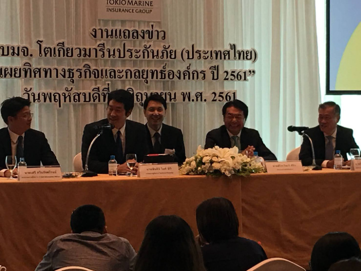
東京海上セーフティー・インシュランス 発足 — タイ事業の統合（2018-2019年）
タイ国東京海上火災保険と、タイの保険大手セーフティー・インシュランスの統合の記録7点。三木晋吉が統合のリーダーとして推進しました。買収は2018年6月に発表され、2019年6月4日に合併新会社の名称を「東京海上セーフティー・インシュランス」とすることが公表、タイ保険委員会事務局（OIC）の承認を経て2020年初めに統合が完了しました。新会社は3年以内に収入保険料217億バーツ、純利益11億バーツを目標に掲げています。収録内容は、2561年（2018年）6月の事業方針記者会見、幹部の集合写真、2019年4月30日の全社集会（会場全体と参加者の様子）、2019年6月4日の記者会見後に撮影された新経営陣の記念撮影、時事通信社「時事速報」2019年6月5日付の報道、そして2019年12月20日のタウンホールミーティング「Foster a sustainable future」。The Nation紙も「Insurers merge as Tokio Marine Safety Insurance」として報じています（本サイトの外部掲載欄からご覧いただけます）。ご一緒した方々のお名前は伏せています。
ENSeven records of the merger of Tokio Marine Insurance (Thailand) with Safety Insurance, one of Thailand's major general insurers — a integration that Shinkichi Miki led. The acquisition was announced in June 2018; on 4 June 2019 the name of the merged company was announced as Tokio Marine Safety Insurance, and the integration completed in early 2020 following approval by Thailand's Office of Insurance Commission. The new company set out targets of 21.7 billion baht in gross written premium and 1.1 billion baht in net profit within three years. The set holds the June 2018 business-strategy press conference, a group portrait of the management team, the all-staff meeting of 30 April 2019, the portrait of the new leadership taken after the press conference of 4 June 2019, the JIJI Press bulletin of 5 June 2019 reporting the merger, and the town hall meeting of 20 December 2019 under the banner "Foster a sustainable future". The Nation also carried the story as "Insurers merge as Tokio Marine Safety Insurance"; the link is in the external coverage section of this site. The names of those pictured are withheld.
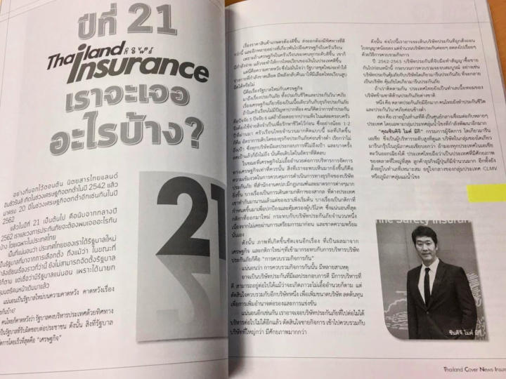
Thailand Insurance 誌 2019年 特集「21年目のタイ保険業界に何が起きるか」
タイの保険専門誌 Thailand Insurance（นิตยสารไทยแลนด์อินชัวรันส์）創刊21年目の特集記事。2562年（2019年）以降のタイ保険業界の展望を論じる。金利環境と家計消費、監督当局の規制強化、業界再編・M&Aの加速、生命保険と損害保険の垣根の変化などを取り上げる。東京海上アジア 常務取締役 三木晋吉（ชินคิจิ ไมค์ มิกิ）が、東南アジア市場の潜在力、とりわけCLMV諸国とメコン地域の成長性についてコメント。
ENFeature in Thailand Insurance magazine marking its 21st year, on what lies ahead for the Thai insurance industry from 2019: interest rates and household spending, tighter regulation, accelerating consolidation and M&A, and the blurring line between life and non-life. Shinkichi Mike Miki, Managing Director of Tokio Marine Asia, comments on the potential of the Southeast Asian market and particularly the growth of the CLMV countries and the Mekong region.
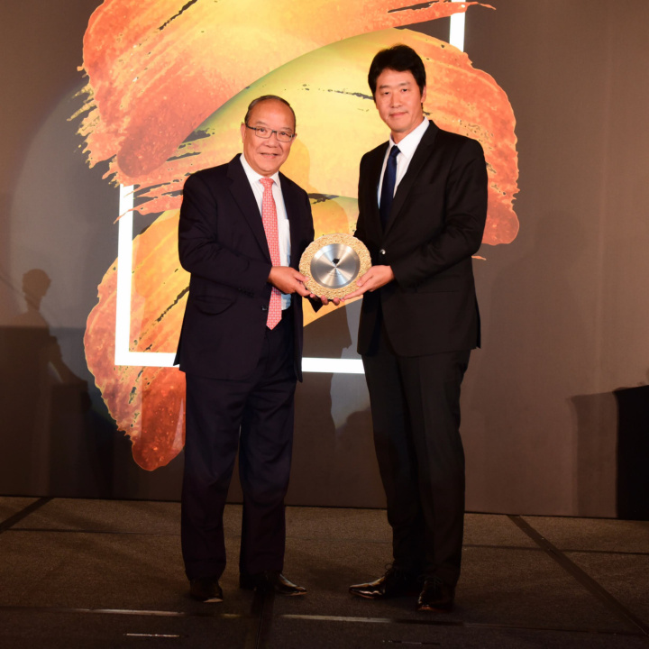
22nd Asia Insurance Industry Awards 2018（シンガポール）
Asia Insurance Review 主催「22nd Asia Insurance Industry Awards 2018」（シンガポール）の記録2点。東京海上アジア 常務取締役 三木晋吉は2018年・2019年の2年にわたり同アワードの審査員を務めました。記念プレートの授与と、壇上でのスピーチ。2018年10月開催。正確な日付は不明です。ご一緒した方々のお名前は伏せています。
ENTwo photographs from the 22nd Asia Insurance Industry Awards, organised by Asia Insurance Review and held in Singapore in October 2018: the presentation of a commemorative plaque, and Shinkichi Miki speaking from the podium. As Managing Director of Tokio Marine Asia he served on the panel of judges for the awards in both 2018 and 2019. The exact date is not known. The names of those pictured are withheld.
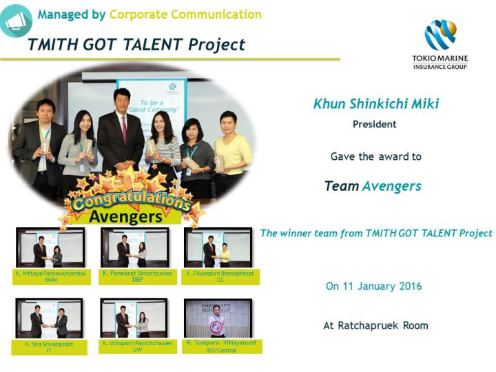
タイ国東京海上火災保険 社内表彰 2016-2018
年次行事以外の社内表彰の記録3点。「TMITH GOT TALENT」プロジェクトの表彰（2016年1月11日・Ratchapruek Room）、関係者への表彰状授与（写真データの記録日は2016年7月28日）、そして「ROCK 'N ROLL」をテーマとしたパーティーでの表彰（会場の掲示は7月8日、写真データの記録日は2018年7月28日）。後半2点は正確な開催日が確認できていません。ご一緒した方々のお名前は伏せています。
ENThree records of internal awards outside the annual events: the award for the TMITH Got Talent project on 11 January 2016 in the Ratchapruek Room; the presentation of certificates to colleagues and partners, the photograph dated 28 July 2016 in its file data; and an award at a Rock 'n Roll themed party, whose banner reads 8 July and whose file data is dated 28 July 2018. The exact dates of the latter two are not confirmed. The names of those pictured are withheld.
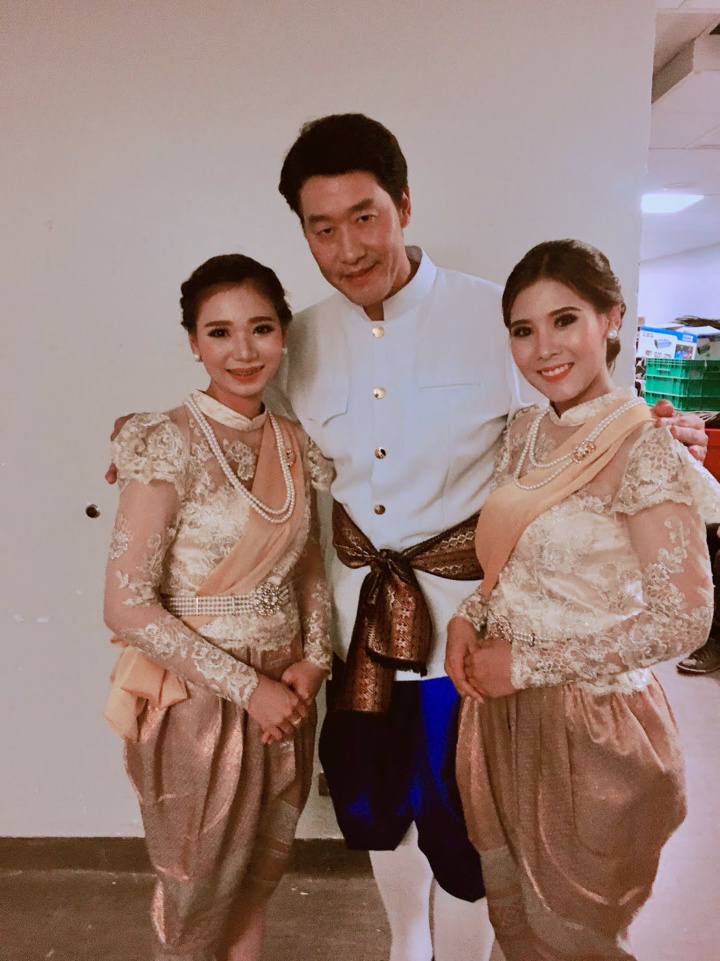
タイ国東京海上火災保険 代理店決起大会 2018（KEKKI TAIKAI 2018）
2018年3月30日に開催された代理店決起大会「KEKKI TAIKAI 2018」の記録8点。舞台裏、ステージでの出し物、背景幕での記念撮影、そして翌31日にタイの正装で撮影した記念写真。正装での記念写真は、コロニアル様式の洋館の前での少人数と大人数の集合、および会場の背景幕の前での撮影。三木晋吉社長にとって最後の決起大会となりました（後任の発表は同月28日）。ご一緒した方々のお名前は伏せています。
ENEight photographs from Kekki Taikai 2018, the annual agency rally of Tokio Marine Insurance (Thailand), held on 30 March 2018: backstage, a stage performance, group portraits at the backdrop, and photographs in Thai formal dress taken the following day — before a colonial-style villa and at the event backdrop. It was the last such rally of Shinkichi Miki's tenure as President; his successor had been announced on 28 March. The names of those pictured are withheld.
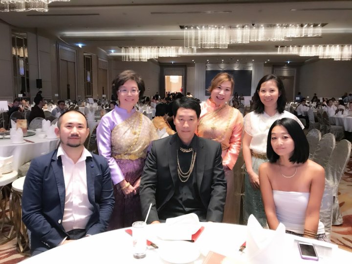
タイ国東京海上火災保険 新年会 2018
2018年3月16日に開催された社員の新年会の記録8点。その年のテーマは「Once upon the time」。ステージ前での記念撮影、テーブルでの集合、仮装した皆さまとの記念写真、会場全景に加え、中華風の装いの方との記念撮影、セーラー服姿の一団による余興の壇上へマイクを持って上がる場面、舞台裏での記念撮影。ご一緒した方々のお名前は伏せています。
ENEight photographs from the 2018 staff party of Tokio Marine Insurance (Thailand), held on 16 March 2018 under the theme "Once upon the time": portraits in front of the stage, a table group, photographs with colleagues in costume, a view of the hall, a portrait with a colleague in Chinese court dress, Shinkichi Miki taking the stage with a microphone during a sailor-suit performance, and a group photograph backstage. The names of those pictured are withheld.
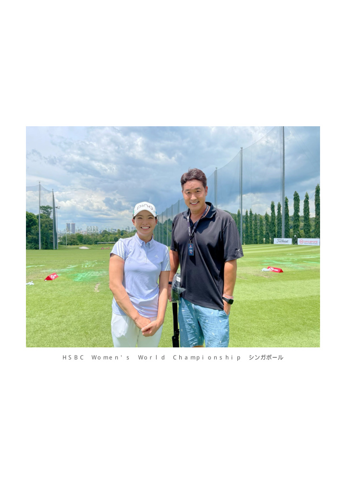
ゴルフの思い出 Honda LPGA Thailand・HSBC Women's World Championship
タイ駐在時代に足を運んだ女子ゴルフトーナメントでの記念写真24点。Honda LPGA Thailand（チョンブリ・シアムカントリークラブ）の練習日・ラウンド・大会レセプション、およびHSBC Women's World Championship（シンガポール）でのもの。2016年大会10周年を記念したガラでの太鼓の演舞、プロアマ戦でサインをいただいたHonda LPGA Thailandのキャップを手にした一枚、2017年・2018年のラウンドで各ホールの表示板の前での記念撮影、レセプションでの記念撮影、そして大会記念のキャディバッグまで。2017年のプロアマ戦の様子は、ご一緒した選手ご本人がSNSに投稿されており、その投稿へのリンクを本サイトの外部掲載欄に置いています。ご一緒した選手の皆さまのお名前は伏せています。
ENTwenty-four photographs from women's golf tournaments attended during the Thailand years: practice days, rounds and the tournament reception at Honda LPGA Thailand (Siam Country Club, Chonburi), and the HSBC Women's World Championship in Singapore. The set includes the drum performance at the gala marking the tournament's tenth anniversary in 2016, a portrait holding a Honda LPGA Thailand cap signed during the pro-am, portraits at the hole markers during the 2017 and 2018 rounds, portraits at the reception, and the commemorative caddie bag. One of the players posted a group photograph from the 2017 pro-am on social media; the link to that post is in the external coverage section of this site. The names of the players pictured are withheld.
タイのモーターショー（2014-2017年）
タイで開催された自動車展示会を訪れた際の記録14点。自動車保険を主力とする損害保険会社の経営者として、各社の新型車と市場の動きを見て回ったものです。2014年11月18日の三菱「ALL NEW TRITON」の展示にはじまり、2016年3月22日には会場全景、ポルシェ911 GT3 Cup、MINI／BMW、マツダ、いすゞ、スズキ、スバル、トヨタと各社のブースを回りました。ホンダ「All-new BR-V」の発表ステージも収めています。2017年12月1日には三菱「GT PHEV CONCEPT」のお披露目前に同社の方と記念撮影、ホンダ・シビックのブースやレクサス・ヒュンダイ側の通路で東京海上の同僚の皆さまと並んでいます。当時のタイ国東京海上火災保険社長 三木晋吉。ご一緒した方々のお名前は伏せています。
ENFourteen photographs from visits to motor shows in Thailand between 2014 and 2017, made as the head of a general insurance company whose largest line was motor — a chance to see each maker's new models and where the market was heading. The set opens with the Mitsubishi All New Triton on 18 November 2014, then 22 March 2016 across the halls: a wide view of the floor, a Porsche 911 GT3 Cup, the MINI and BMW stand, and the Mazda, Isuzu, Suzuki, Subaru and Toyota booths. It also holds the launch stage for the Honda All-new BR-V. On 1 December 2017 Shinkichi Miki was photographed with a Mitsubishi executive before the unveiling of the GT PHEV Concept, and with colleagues from Tokio Marine at the Honda Civic stand and in the aisle by Lexus and Hyundai. The names of those pictured are withheld.
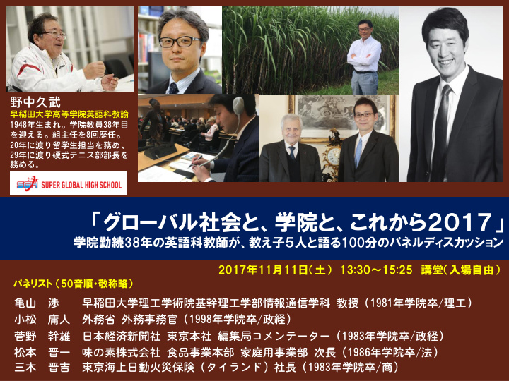
早稲田大学高等学院 パネルディスカッション「グローバル社会と、学院と、これから2017」
2017年11月11日、早稲田大学高等学院 講堂で開催されたパネルディスカッションの告知資料。英語科教諭 野中久武氏が教え子5名と語る100分。パネリストは亀山渉（早稲田大学教授）、小松庸人（外務省）、菅野幹雄（日本経済新聞社）、松本晋一（味の素）、三木晋吉（東京海上日動火災保険タイランド社長・1983年学院卒）。
ENAnnouncement for a panel discussion held on 11 November 2017 at Waseda University Senior High School, where an English teacher spoke with five former students. Shinkichi Miki, then President of Tokio Marine Insurance (Thailand) and a 1983 graduate of the school, appeared alongside panelists from Waseda University, the Ministry of Foreign Affairs, Nikkei and Ajinomoto.
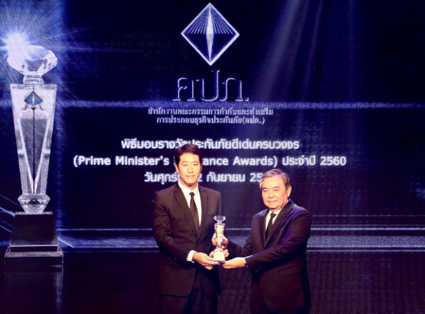
คปภ. Prime Minister's Insurance Awards 2560（2017年）受賞 — 2年連続
タイ保険委員会事務局（สำนักงาน คปภ. / OIC）が主催する「รางวัลประกันภัยดีเด่นครบวงจร（Prime Minister's Insurance Awards）」を2560年（2017年）9月22日に受賞した際の記録10点。前年2559年（2016年）に続く2年連続受賞です。壇上での授与に続き、会場に設けられた和のしつらえの自社ブースでトロフィーを手にした記念撮影、社員一同との撮影、展示会場の様子、ブースのスタッフとの記念撮影、そして花束の贈呈まで。プミポン国王陛下の服喪期間中にあたり、参列者は黒の装いです。当時のタイ国東京海上火災保険社長 三木晋吉。ご一緒した方々のお名前は伏せています。
ENTen photographs from 22 September 2017, when Tokio Marine Insurance (Thailand) received the Prime Minister's Insurance Awards (รางวัลประกันภัยดีเด่นครบวงจร) for the year 2560, presented by Thailand's Office of Insurance Commission (คปภ.) — the second year running, after 2559 (2016). The set runs from the presentation on stage to the company's Japanese-styled exhibition booth, where Shinkichi Miki, then President, was photographed with the trophy, with colleagues and with the booth staff, along with views of the exhibition hall and the presentation of a bouquet. The date falls within the mourning period for His Majesty King Bhumibol Adulyadej, and those present are dressed in black. The names of those pictured are withheld.
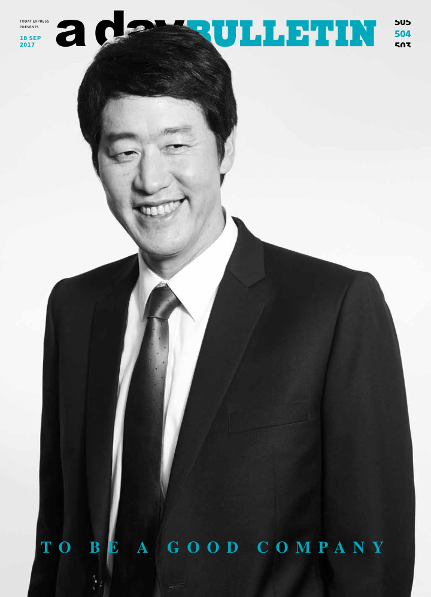
a day BULLETIN 第504号 特集インタビュー「To Be a Good Company」
タイの週刊フリーマガジン a day BULLETIN 第504号（2017年9月18日発行）の特集インタビュー全4ページ。同誌の発行部数はタイ国内で25万部。東京海上日動火災保険（タイランド）社長 三木晋吉（Shinkichi Mike Miki）。米国・日本・フィリピン・タイでの勤務経験を踏まえた企業文化の違い、「To Be a Good Company」の three pillars、マリン保険とメコン諸国への事業展開、宮本武蔵に学ぶ意思決定について。表紙・pp.10-15。
ENCover feature interview, "To Be a Good Company," in a day BULLETIN No. 504, a weekly free magazine distributed across Thailand with a circulation of 250,000 copies, dated 18 September 2017. Shinkichi Mike Miki, President of Tokio Marine Insurance (Thailand), on differences in corporate culture across the United States, Japan, the Philippines and Thailand, the three pillars of "To Be a Good Company," marine insurance and expansion into the Mekong countries, and decision-making learned from Miyamoto Musashi. Cover and pp. 10-15.
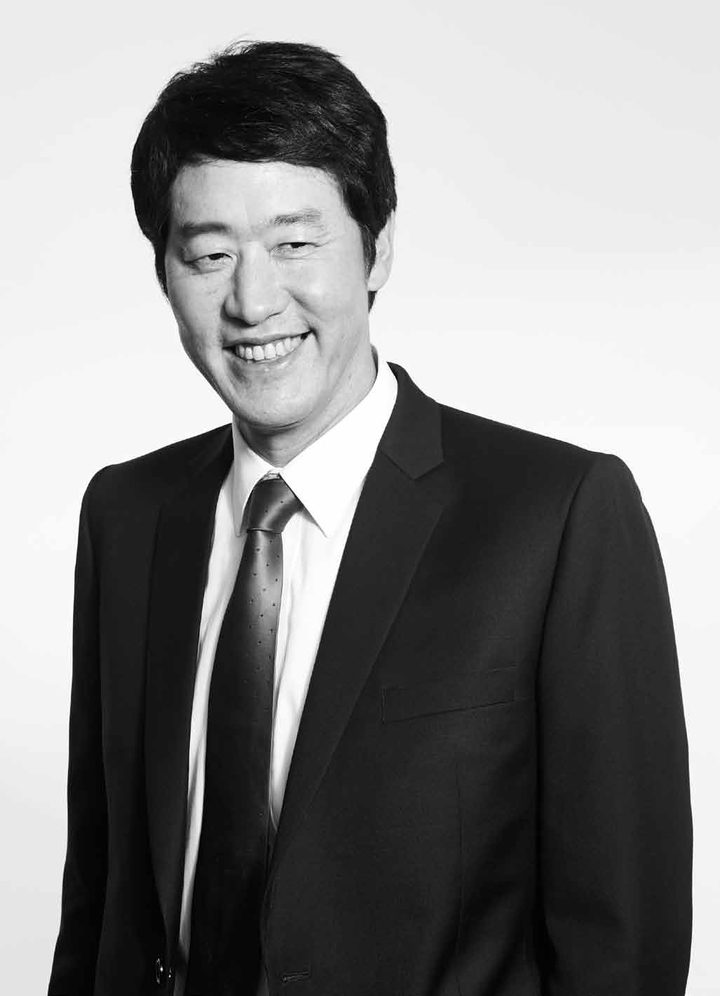
三木晋吉 ポートレート（a day BULLETIN 第504号 表紙写真・2017年）
タイの週刊フリーマガジン a day BULLETIN 第504号（2017年9月18日発行）の表紙に使われたポートレート。当時、東京海上日動火災保険（タイランド）社長 三木晋吉（Shinkichi Mike Miki）。同誌はタイ全土に25万部を発行し、第504号の特集タイトルは「To Be a Good Company」。撮影は2017年8月11日、バンコクのスタジオにて。撮影：a day BULLETIN（TODAY EXPRESS）。
ENThe portrait used on the cover of a day BULLETIN No. 504, dated 18 September 2017 — a weekly free magazine distributed across Thailand with a circulation of 250,000 copies, whose feature for that issue was titled "To Be a Good Company." Shinkichi Mike Miki was then President of Tokio Marine Insurance (Thailand). Photographed in a Bangkok studio on 11 August 2017. Photograph by a day BULLETIN (TODAY EXPRESS).
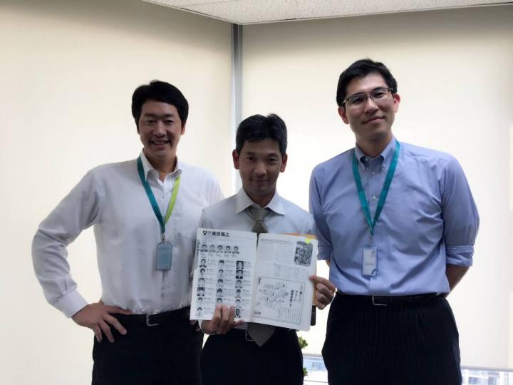
記念写真 執務室にて（2010年代）
執務室で撮影した記念写真2点。東京海上の社内誌に掲載された日本リーグ時代の選手名鑑のページを手にしたもの、および a day BULLETIN 第504号「良い会社」の誌面を手にしたもの（2017年9月18日の発行後）。撮影時期の詳細は不明です。ご一緒した方々のお名前は伏せています。
ENTwo photographs taken in the office: one with a page from a Tokio Marine in-house magazine listing the squad from his years in Japan's national basketball league, and one with the issue of a day BULLETIN No. 504 carrying the cover line "a good company," taken after its publication on 18 September 2017. The dates of the photographs are not known. The names of those pictured are withheld.
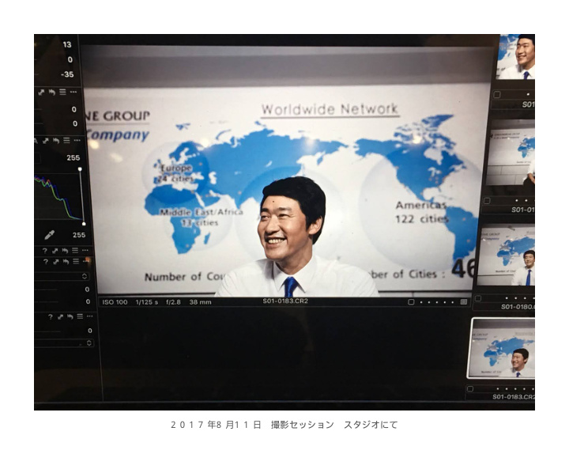
a day BULLETIN 第504号 撮影記録と反響
2017年8月11日にバンコクで行われた a day BULLETIN 第504号 表紙・特集インタビューの撮影セッションの記録。同誌はタイ全土に25万部を発行する週刊フリーマガジンで、第504号の特集タイトルは表紙に掲げられた「To Be a Good Company」。スタジオでのポートレート撮影、東京海上グループのワールドワイド・ネットワーク図を背にしたカット、執務室での撮影風景、誌面に使われたオフィスでのポートレート。あわせて同年9月18日の発行後、BTS車内やバンコク市内の飲食店で誌面が読まれている様子、10月7日に飲食店でサイン入りの誌面を手にした記念撮影、および2024年のニューズウィーク日本版掲載時の反響を収録。全13点。ご一緒した方々のお名前は伏せています。
ENThirteen images around the cover and feature interview of a day BULLETIN No. 504 — "To Be a Good Company" — a weekly free magazine distributed across Thailand with a circulation of 250,000 copies, shot in Bangkok on 11 August 2017: studio portraits, a frame against the Tokio Marine Group worldwide network map, the shoot in his office, and the office portrait used in the magazine. Also included are scenes of the issue being read on the BTS and in Bangkok restaurants after publication on 18 September, a portrait taken in a restaurant on 7 October with the signed copy held up, and later reactions to his 2024 appearance in Newsweek Japan. The names of those pictured are withheld.
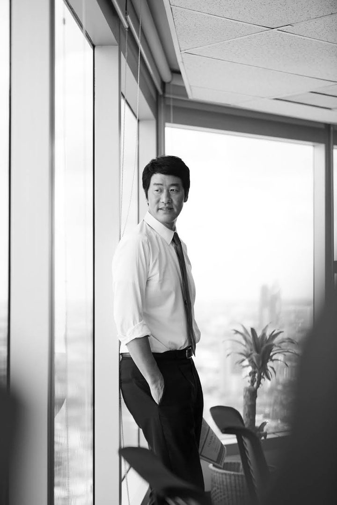
三木晋吉 誌面用ポートレート（バンコクのオフィスにて・2017年）
a day BULLETIN 第504号の特集インタビューに使われた誌面用ポートレート。2017年8月11日、バンコクの東京海上日動火災保険（タイランド）オフィスにて撮影。当時の社長 三木晋吉（Shinkichi Mike Miki）。撮影：a day BULLETIN（TODAY EXPRESS）。
ENThe portrait used inside the feature interview in a day BULLETIN No. 504, taken in the Bangkok office of Tokio Marine Insurance (Thailand) on 11 August 2017. Shinkichi Mike Miki was then President of the company. Photograph by a day BULLETIN (TODAY EXPRESS).
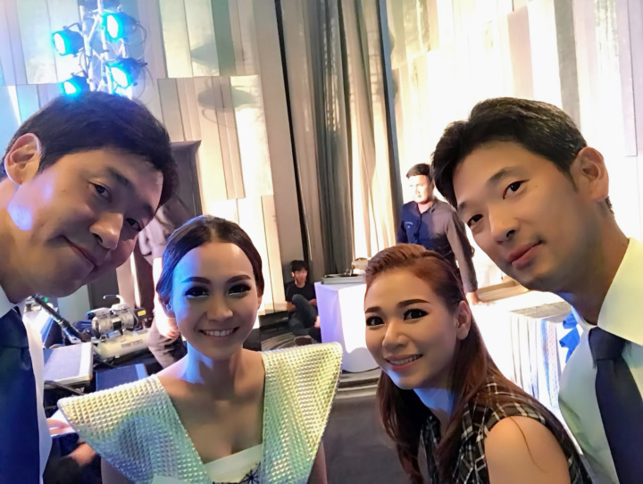
タイ国東京海上火災保険 代理店決起大会 2017（KEKKI TAIKAI 2017 AGENCY AWARDS）
2017年3月31日に開催された代理店決起大会「KEKKI TAIKAI 2017 AGENCY AWARDS」の記録9点。鏡開き、舞台裏でトロフィーを手にしたカット、出演者の皆さまとの記念撮影、代理店の皆さまとの集合写真、開演前の舞台前でダンサーのお二人との記念撮影、会場でのご来賓との記念撮影。ご一緒した方々のお名前は伏せています。
ENNine photographs from Kekki Taikai 2017, the agency rally and agency awards of Tokio Marine Insurance (Thailand), held on 31 March 2017: the sake-barrel opening, a backstage moment with a trophy, portraits with the evening's performers, group photographs with the agents, a portrait with two of the dancers by the stage before the show, and a portrait with a guest at the venue. The names of those pictured are withheld.
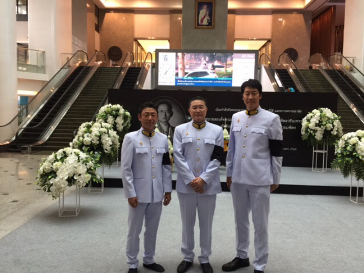
タイ王宮にてプミポン国王陛下に拝礼（2017年）
2016年10月13日に崩御されたプミポン国王陛下（ラーマ9世）に拝礼した際の記録8点。2017年3月24日、タイ国東京海上火災保険の一行が王宮を訪れ、白い花輪を捧げました。男性はタイの正装（白）に喪章、女性は黒の喪服を着用。御真影と白い供花が設けられたオフィスビルのロビーでの記念撮影から、王宮敷地内での全体集合写真、男性一同・女性一同の記念撮影まで。当時のタイ国東京海上火災保険社長 三木晋吉。ご一緒した方々のお名前は伏せています。
ENEight photographs from 24 March 2017, when a delegation from Tokio Marine Insurance (Thailand) went to the Grand Palace in Bangkok to pay their respects to His Majesty King Bhumibol Adulyadej (Rama IX), who had passed away on 13 October 2016, and to lay a white wreath. The men are in Thai formal white dress with black mourning armbands, the women in black mourning dress. The set runs from portraits before the memorial display in an office building lobby to the group photographs in the palace grounds. Shinkichi Miki was then President of the company. The names of those pictured are withheld.
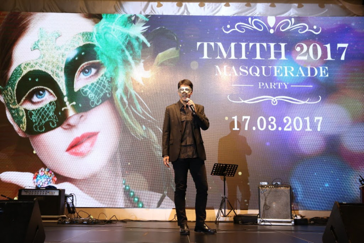
タイ国東京海上火災保険 新年会 2017（MASQUERADE PARTY）
2017年3月17日に開催された社員の新年会「TMITH 2017 MASQUERADE PARTY」の記録13点。仮装での余興、長年勤続者の表彰（Long Service Award）、仮装コンテストの表彰、参加者の集合写真。三木晋吉社長も仮装して壇上に立ちました。会場入口での牛の着ぐるみ姿の皆さまとの記念撮影、ステージの背景幕（17.03.2017）、豹柄の衣装での余興、会場での皆さまとの記念撮影も収めています。ご一緒した方々のお名前は伏せています。
ENThirteen photographs from the TMITH 2017 Masquerade Party, the staff party of Tokio Marine Insurance (Thailand), held on 17 March 2017: performances in costume, the Long Service Awards, prizes for the costume contest, group portraits, colleagues in cow onesies at the entrance, the stage backdrop dated 17.03.2017, a leopard-print stage turn, and portraits around the ballroom. Shinkichi Miki took the stage in costume himself. The names of those pictured are withheld.
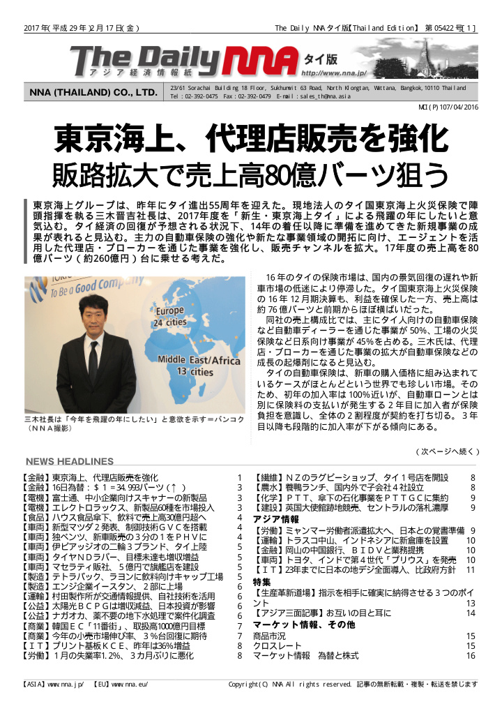
The Daily NNA タイ版 2017年2月17日「東京海上、代理店販売を強化」
アジア経済情報紙NNAタイ版の一面記事。タイ国東京海上火災保険 三木晋吉社長へのインタビュー。タイ進出55周年を経て2017年度を飛躍の年と位置づけ、代理店・ブローカー経由の販売チャンネル拡大により売上高80億バーツ（約260億円）を目指す方針を語る。自動車ディーラー経由50%・日系向け45%という売上構成、タイ特有の自動車保険市場についても言及。
ENFront-page article in The Daily NNA (Thailand edition), 17 February 2017. An interview with Shinkichi Miki, President of Tokio Marine Insurance (Thailand), on positioning 2017 as a year of growth after 55 years in the Thai market, expanding distribution through agents and brokers toward a revenue target of THB 8 billion, and the particular character of Thailand's motor insurance market.
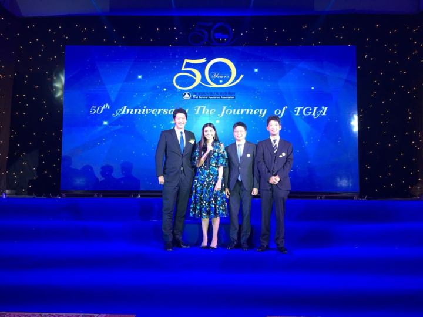
タイ損害保険協会（TGIA）50周年記念式典（2017年）
タイ損害保険協会（สมาคมประกันวินาศภัยไทย / TGIA）の創立50周年記念式典「50th Anniversary — The Journey of TGIA」の記録2点。壇上での記念撮影と、業界各社が並んだ全体集合写真。会場には「Power of Insurance」として500万バーツの寄付が掲げられています。2017年開催。正確な日付は不明です。ご一緒した方々のお名前は伏せています。
ENTwo photographs from the fiftieth anniversary celebration of the Thai General Insurance Association (TGIA), held under the title "50th Anniversary — The Journey of TGIA" in 2017: a group on stage, and a full assembly of the industry, with the association's THB 5 million charitable donation displayed under the banner "Power of Insurance." The exact date is not known. The names of those pictured are withheld.
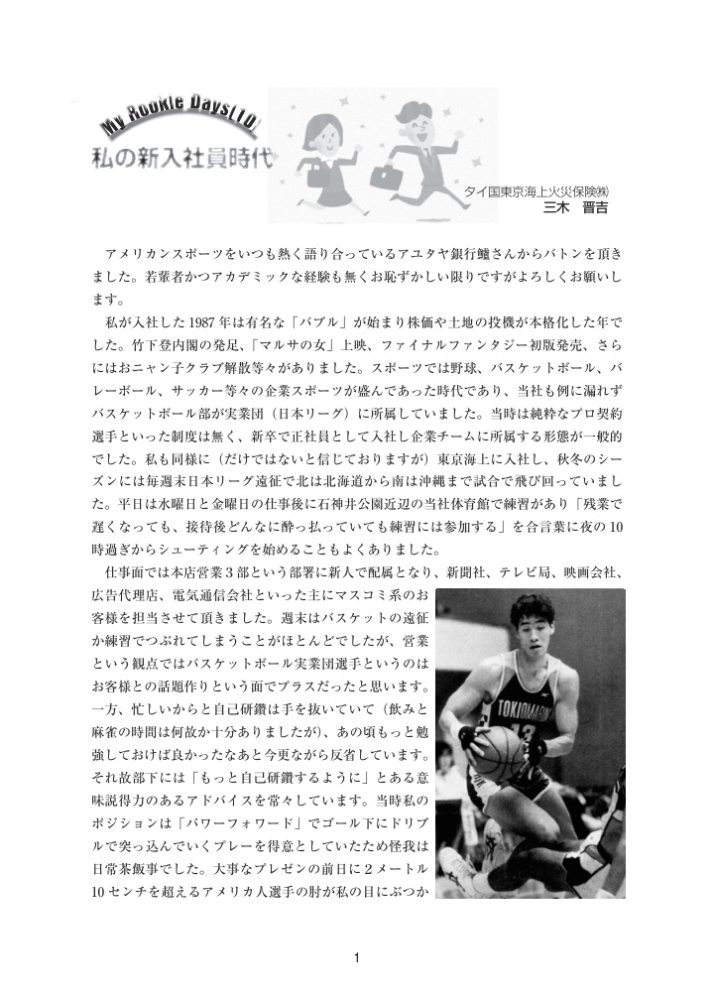
寄稿「My Rookie Days（10）私の新入社員時代」
タイ国東京海上火災保険 三木晋吉による寄稿。1987年入社当時のバブル期の東京、本店営業3部でマスコミ系顧客を担当した日々、日本リーグ・バスケットボール部との両立、興行中止保険や打ち上げ保険といった特殊な保険の設計、アントニオ猪木氏との出会い、そしてスティーブ・ジョブズの「Connecting Dots」に重ねた「ご縁」についてのエッセイ。
ENEssay by Shinkichi Miki, then President of Tokio Marine Insurance (Thailand), on his first years at the company. Tokyo in the bubble era after joining in 1987, serving media clients at the head office, balancing work with the company's basketball team in Japan's national league, designing unusual covers such as event cancellation insurance, and a reflection on chance connections framed by Steve Jobs's "connecting dots."
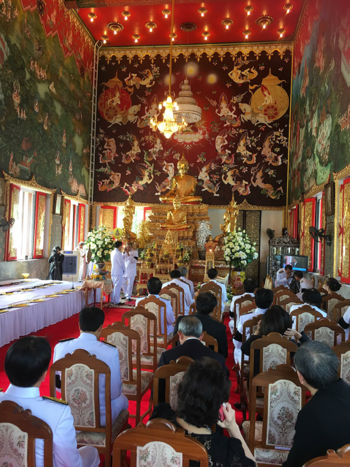
バンコク市内の寺院での法要（2016年）
2016年11月4日、バンコク市内の寺院の本堂で執り行われた法要に参列した際の記録5点。プミポン国王陛下（ラーマ9世）が2016年10月13日に崩御された直後の服喪期間中にあたり、参列者は白のタイ正装（ชุดปกติขาว）に喪章、または黒の喪服を着用しています。ラーマキエンの壁画と天井画に囲まれた本堂の様子、白い供花を供えた本尊、本尊前での記念撮影、そして本堂前での記念撮影まで。当時のタイ国東京海上火災保険社長 三木晋吉。行事の名称は特定できていないため、確認でき次第あらためて記載します。ご一緒した方々のお名前は伏せています。
ENFive photographs from 4 November 2016, at a Buddhist ceremony held in the ordination hall of a temple in Bangkok. The date falls in the mourning period that began with the passing of His Majesty King Bhumibol Adulyadej (Rama IX) on 13 October 2016, and those attending are in Thai formal white dress with mourning armbands or in black mourning dress. The set shows the hall with its Ramakien murals and painted ceiling, the principal Buddha image with white floral offerings, portraits before the image, and a group portrait at the doors. Shinkichi Miki was then President of Tokio Marine Insurance (Thailand). The name of the occasion has not yet been established and will be added once confirmed. The names of those pictured are withheld.
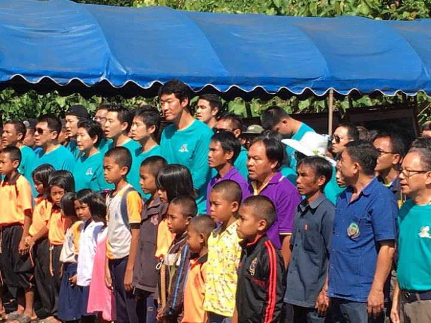
堰堤づくりと植樹のボランティア（2016年）
2016年10月8日、タイ国東京海上火災保険の社員が参加した森林保全ボランティアの記録6点。前年のナーン県に続く堰堤（ฝาย）づくりの活動で、この年は竹を組んだ堰堤を沢に築きました。青いテントの下での開会に地元の小学生と村の方々が並び、そろいのTシャツで石を運び、竹を組み、完成した堰堤のそばで記念撮影。休憩をはさんで、子どもたちと一緒に苗木を植えました。当時のタイ国東京海上火災保険社長 三木晋吉も参加しています。CEO Thailand誌が「水と森の保全プロジェクト」として紹介した継続的な取り組みにあたります。ご一緒した方々のお名前は伏せています。
ENSix photographs from 8 October 2016, when staff of Tokio Marine Insurance (Thailand) took part in a forest and water conservation volunteer day. Following on from the check dams built in Nan Province the year before, this time bamboo check dams (ฝาย) were built across a stream. The set runs from the opening under a blue awning, where local schoolchildren and villagers lined up alongside the volunteers, through carrying stones and lashing the bamboo into place, a group portrait at the finished dam and a break under the shelter, to planting saplings together with the children. Shinkichi Miki, then President of the company, took part. This is part of the continuing water and forest conservation work described in the CEO Thailand feature also held in this archive. The names of those pictured are withheld.
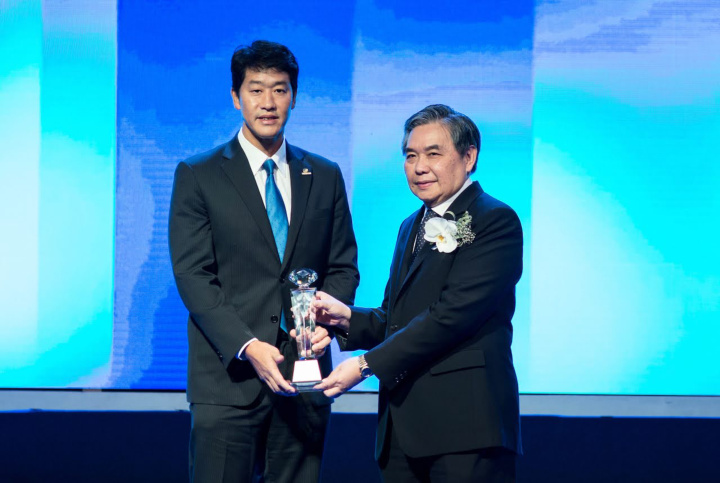
คปภ. Prime Minister's Insurance Awards 2559（2016年）受賞
タイ保険委員会事務局（สำนักงาน คปภ. / OIC）が主催する「รางวัลประกันภัยดีเด่นครบวงจร（Prime Minister's Insurance Awards）」を2559年（2016年）9月22日に受賞した際の記録6点。壇上でトロフィーを受け取るタイ国東京海上火災保険 三木晋吉社長、会場のスクリーン、受賞各社の集合写真、会場ロビーでの記念撮影、そしてトロフィーを囲んだ社員一同の記念撮影2点。翌2560年（2017年）にも同賞を受賞し、2年連続受賞となりました。ご一緒した方々のお名前は伏せています。
ENSix photographs from 22 September 2016, when Tokio Marine Insurance (Thailand) received the Prime Minister's Insurance Awards (รางวัลประกันภัยดีเด่นครบวงจร) for the year 2559, presented by Thailand's Office of Insurance Commission (คปภ.). Shinkichi Miki, then President, receives the trophy on stage; the set also holds the hall screen, a group portrait of the year's recipients, a portrait in the venue lobby and two photographs of colleagues gathered around the trophy. The company received the same award again the following year, 2560 (2017). The names of those pictured are withheld.
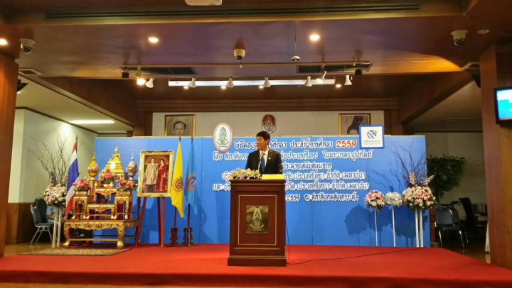
奨学金贈呈式 2559年度（タイ国東京海上火災保険）
タイ社会福祉協議会（สภาสังคมสงเคราะห์แห่งประเทศไทยฯ）との「พิธีมอบทุนการศึกษา ประจำปีการศึกษา 2559」奨学金贈呈式の記録7点。タイ国東京海上火災保険およびタイ国東京海上生命保険が支援したもので、同社が継続して取り組んでいた社会貢献活動のひとつです。演台での挨拶、生徒の皆さんから出席者への花輪の献上、奨学金の授与、目録を持った関係者の記念撮影、生徒と関係者の全体集合写真。最後の1点は同日にオフィスで撮影したガネーシャ像の飾りです。写真データはいずれも2559年（2016年）9月14日の記録で、同日の開催と見られます。ご一緒した方々のお名前は伏せています。
ENSeven records of the scholarship award ceremony for the 2559 (2016) academic year, held with the National Council of Social Welfare of Thailand and supported by Tokio Marine Insurance (Thailand) and Tokio Marine Life Insurance (Thailand): remarks from the podium, garlands offered by the students to the guests, the presentation of the awards, a group portrait with the ceremonial plaque, and a full assembly of students and organisers. The last image is a Ganesha shrine photographed in the office the same day. All the photographs carry the date 14 September 2016 in their file data, taken here to be the day of the ceremony. The names of those pictured are withheld.
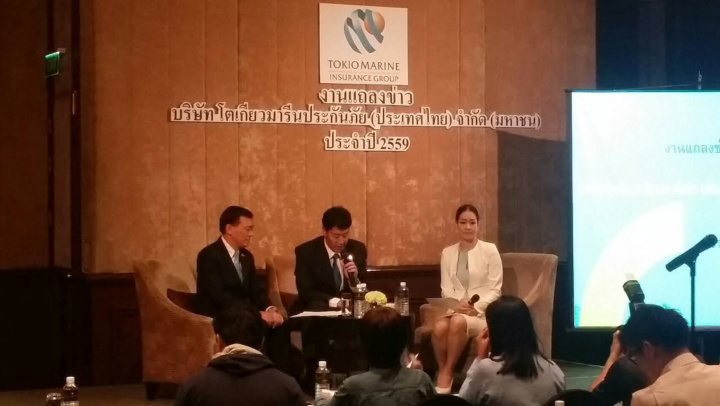
タイ国東京海上火災保険 年次記者会見 2559（2016年）
2016年3月29日、バンコク市内のホテルで開かれた年次記者会見の記録5点。看板には「งานแถลงข่าว บริษัทโตเกียวมารีนประกันภัย (ประเทศไทย) จำกัด (มหาชน) ประจำปี 2559」（タイ国東京海上火災保険 2559年 記者会見）と掲げられています。壇上で社長 三木晋吉がマイクを持って記者の質問に答える様子、傷害保険・自動車保険・旅行傷害保険・ゴルファー保険・海上運送保険のアイコンを並べた会社案内のバックボードでの記念撮影。The Nation紙は同じ2016年3月29日付で「Tokio Marine Insurance ups focus on infrastructure」としてこの会見を報じています（本サイトの外部掲載欄からご覧いただけます）。ご一緒した方々のお名前は伏せています。
ENFive photographs from the annual press conference of Tokio Marine Insurance (Thailand) held in a Bangkok hotel on 29 March 2016. The banner reads "งานแถลงข่าว บริษัทโตเกียวมารีนประกันภัย (ประเทศไทย) จำกัด (มหาชน) ประจำปี 2559" — the company press conference for the year 2559. Shinkichi Miki, then President, answers questions from the floor with a microphone, and the set also holds portraits at the company backdrop showing the icons for personal accident, motor, travel accident, golfer and marine and transit insurance. The Nation carried its report of the conference, "Tokio Marine Insurance ups focus on infrastructure", on the same day, 29 March 2016; the link is in the external coverage section of this site. The names of those pictured are withheld.
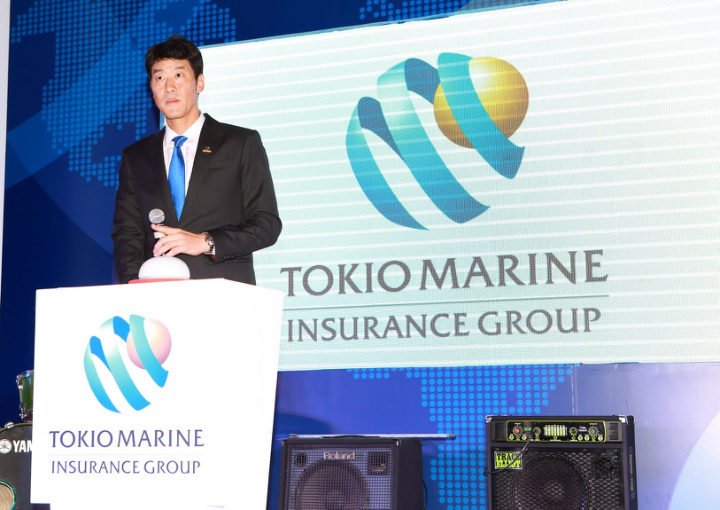
タイ国東京海上火災保険 代理店決起大会 2016（KEKKI TAIKAI 2016）
2016年3月25日に開催された代理店決起大会「KEKKI TAIKAI 2016」の記録27点。一日の流れがほぼそのまま残っています。会場入口の記念撮影ボードでの受付、着物風の衣装のコンパニオンの皆さまとの記念撮影、申年にちなんだ猿のぬいぐるみを手にしたカット、部門ごとの記念撮影、法被姿での鏡開き、2015年度の利益分配（PROFIT SHARING）目録の贈呈、事業方針「Our Business Compass（AGENT）」の説明、代理店の皆さまへの表彰、景品のテレビの授与、バンドとの共演、ご家族へのぬいぐるみの配布、そしてダンスフロアまで。ご一緒した方々のお名前は伏せています。
ENTwenty-seven photographs from Kekki Taikai 2016, the annual agency rally of Tokio Marine Insurance (Thailand), held on 25 March 2016 — very nearly the whole day. Portraits at the photo wall on arrival, with the hostesses in kimono-style dress and with the monkey soft toys marking the year of the monkey, group portraits by department, the sake-barrel opening in happi coats, the presentation of the 2015 profit-sharing certificate, the "Our Business Compass (AGENT)" strategy briefing, awards to the agents, prizes including a television, a turn with the band, soft toys handed to the families who came, and the dance floor. The names of those pictured are withheld.
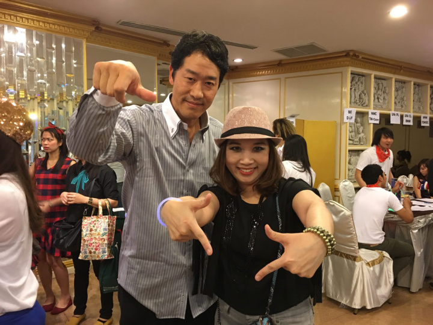
タイ国東京海上火災保険 新年会 2016（TMITH MUSIC FESTIVAL）
2016年3月4日、Crystal Ballroom で開催された社員の新年会「TMITH MUSIC FESTIVAL」の記録8点。その年のテーマは音楽祭で、ベリーダンスや客室乗務員の扮装など各部門の余興が続きました。舞台で花輪を掛けて労をねぎらう場面も収めています。ご一緒した方々のお名前は伏せています。
ENEight photographs from the 2016 staff party of Tokio Marine Insurance (Thailand), held at the Crystal Ballroom on 4 March 2016 under the theme "TMITH Music Festival": performances by each department including belly dancing and cabin-crew costumes, portraits at the backdrop, and a garland placed around a colleague's neck on stage in thanks. The names of those pictured are withheld.
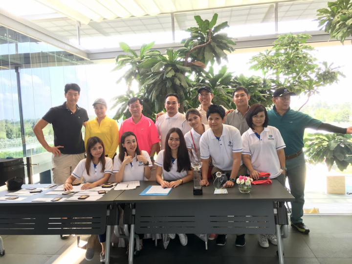
お客様とのゴルフコンペとクリスマスパーティー（2015年）
2015年12月26日、タイ国東京海上火災保険がお客様をお招きして開催したゴルフコンペと、その夜のクリスマスパーティーの記録6点。朝の受付ではスコアカードと優勝カップを並べた席に運営の皆さまが並び、コースでは同社のバックボードの前とティーグラウンドで記念撮影。青空の広がるフェアウェイも収めています。日が暮れてからは会場を移し、赤と緑のTシャツやサンタの衣装で全員が並んだ記念撮影2点。当時のタイ国東京海上火災保険社長 三木晋吉。ご一緒した方々のお名前は伏せています。
ENSix photographs from 26 December 2015, when Tokio Marine Insurance (Thailand) held a golf competition for its customers, followed by a Christmas party the same evening. The morning registration desk is set out with scorecards and the winner's cup; portraits follow at the company backdrop and on the tee, along with a view down the fairway under a clear sky. After dark the party moved indoors, where everyone gathered in red and green shirts and Santa costumes for two group photographs. Shinkichi Miki was then President of the company. The names of those pictured are withheld.
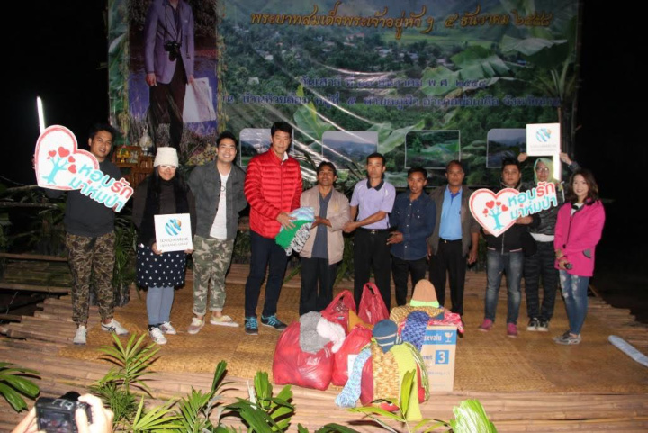
堰堤づくりボランティア ナーン県（2015年）
2015年12月19日、タイ北部ナーン県ボークルア郡プーファー地区のバーン・フアイローム集落で行われた堰堤（ฝาย）づくりのボランティア活動の記録9点。プミポン国王陛下の88歳のお誕生日（2015年12月5日）を記念した「โครงการสร้างฝายถวายในหลวง」として、県・財団とともに実施されました。キャンペーン名は「หอบรัก มาห่มป่า」（愛を抱えて森を包みに）。前夜に集落へ到着して防寒具を贈呈し、翌朝に式典、子どもたちへのマフラー掛け、そして森の中での堰堤づくりへ。タイ国東京海上火災保険の社員が参加し、当時の社長 三木晋吉も加わっています。CEO Thailand誌が「水と森の保全プロジェクト」として紹介した活動にあたります。ご一緒した方々のお名前は伏せています。
ENNine photographs from 19 December 2015, when staff of Tokio Marine Insurance (Thailand) built check dams (ฝาย) at Ban Huai Lom in Phu Fa, Bo Kluea District, Nan Province in northern Thailand. The project was carried out with the province and a foundation to mark the 88th birthday of His Majesty King Bhumibol Adulyadej on 5 December 2015, under the campaign name "หอบรัก มาห่มป่า" — bringing love to wrap the forest. The set runs from the previous evening, when warm clothing was handed over to the village, through the morning ceremony and the scarves given to the children, to the work on the check dams in the forest. Shinkichi Miki, then President of the company, took part. This is the water and forest conservation project mentioned in the CEO Thailand feature also held in this archive. The names of those pictured are withheld.
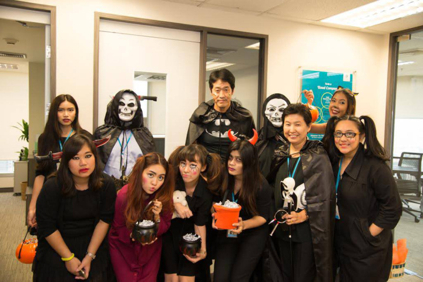
タイ国東京海上火災保険 ハロウィンパーティー 2015
2015年10月29日、バンコクのオフィスで開催されたハロウィンパーティーの記録14点。執務室を飾り付けし、部署ごとに仮装して午後を過ごしました。部門ごとの集合写真、仮装コンテストの表彰状授与、お菓子の配布、タイの正装での集合写真。三木晋吉社長も仮装で参加しています。ご一緒した方々のお名前は伏せています。
ENFourteen photographs from the Halloween party held in the Bangkok office of Tokio Marine Insurance (Thailand) on 29 October 2015. The floor was decorated and each department came in costume for the afternoon: group portraits by team, the certificate for the costume contest, sweets handed round, and a group in Thai formal dress. Shinkichi Miki joined in costume himself. The names of those pictured are withheld.
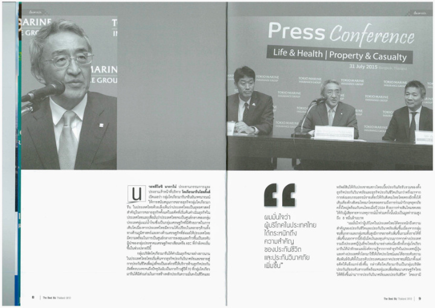
The Best Biz Thailand 2015 表紙特集「東京海上グループ タイ事業戦略記者会見」
2015年7月31日バンコクで開催された東京海上グループの記者会見（Life & Health / Property & Casualty）を伝える表紙特集 pp.8-11。東京海上ホールディングス 永野毅 社長兼CEOが、タイをメコン諸国の中心と位置づけるグループ戦略、2558年から2560年の中期ビジョン「2017 To be a Good Company」の三本柱（Look beyond Profit・Empower our People・Deliver on Commitment）、HCC Insurance Holdings買収、高齢化社会を迎えるタイでの生命保険・損害保険事業について語る。記者会見にはタイ国東京海上火災保険 三木晋吉社長も同席。
ENCover feature, pp. 8-11, on the Tokio Marine Group press conference held in Bangkok on 31 July 2015 covering Life & Health and Property & Casualty. Tsuyoshi Nagano, President and CEO of Tokio Marine Holdings, on the group's strategy with Thailand at the centre of the Mekong countries, the mid-term vision "2017 To be a Good Company" and its three pillars (Look beyond Profit, Empower our People, Deliver on Commitment), the acquisition of HCC Insurance Holdings, and life and non-life business in an ageing Thailand. Shinkichi Miki, President of Tokio Marine Insurance (Thailand), also attended.
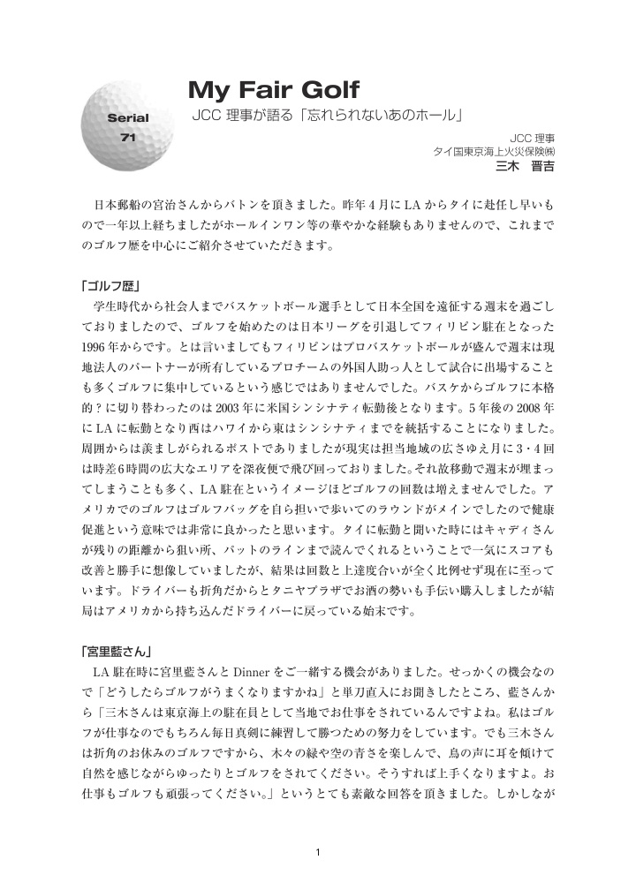
寄稿「My Fair Golf」Serial 71 忘れられないあのホール
バンコク日本人商工会議所（JCC）理事としての寄稿。1996年フィリピン駐在時に始めたゴルフ歴、シンシナティ・ロサンゼルス駐在時代のラウンド、プロゴルファー宮里藍さんから受けた「自然を楽しむ」という助言、そして忘れられないホールとしてナワタニ・ゴルフ・コース15番を挙げる。
ENEssay written as a director of the Japanese Chamber of Commerce, Bangkok. Taking up golf while posted to the Philippines in 1996, rounds played during the Cincinnati and Los Angeles years, advice from a professional golfer on enjoying the natural setting, and the 15th at Nawatani Golf Course as the hole he cannot forget.
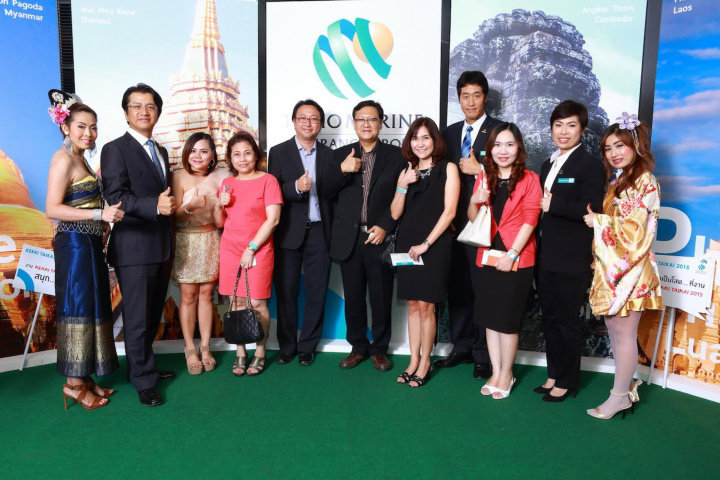
タイ国東京海上火災保険 代理店決起大会 2015（KEKKI TAIKAI 2015）
2015年3月27日に開催された代理店決起大会「KEKKI TAIKAI 2015」の記録9点。鳥居を模したステージに「FIGHT TOGETHER」「STRIVE FOR SUCCESS」を掲げ、会場にはミャンマーのシュエダゴン・パゴダ、タイのワット・プラケオ、カンボジアのアンコール・トム、ラオスのタート・ルアンを並べた記念撮影ボードが設けられました。法被姿での鏡開き、前年度の優績代理店への「TOKIO MARINE AWARD 2014」表彰（傷害保険1,000,000バーツの目録と鳥居型のトロフィー）、そして三木晋吉社長がLEDスーツをまとってダンスチームと登壇したレーザー演出まで。舞台裏で衣装を着付けている場面も収めています。ご一緒した方々のお名前は伏せています。
ENNine photographs from KEKKI TAIKAI 2015, the annual agency rally of Tokio Marine Insurance (Thailand), held on 27 March 2015. The stage was built as a torii gate carrying the slogans "Fight Together" and "Strive for Success", and the photo wall set out landmarks of the region — Shwedagon Pagoda in Myanmar, Wat Phra Kaew in Thailand, Angkor Thom in Cambodia and Phra That Luang in Laos. The set covers the sake-barrel opening in happi coats, the Tokio Marine Award 2014 for the leading agencies with a one-million-baht personal accident certificate and torii-shaped trophies, and the laser show in which Shinkichi Miki, then President, took the stage in an LED suit with the dance team — including the moment backstage when the suit was fitted. The names of those pictured are withheld.
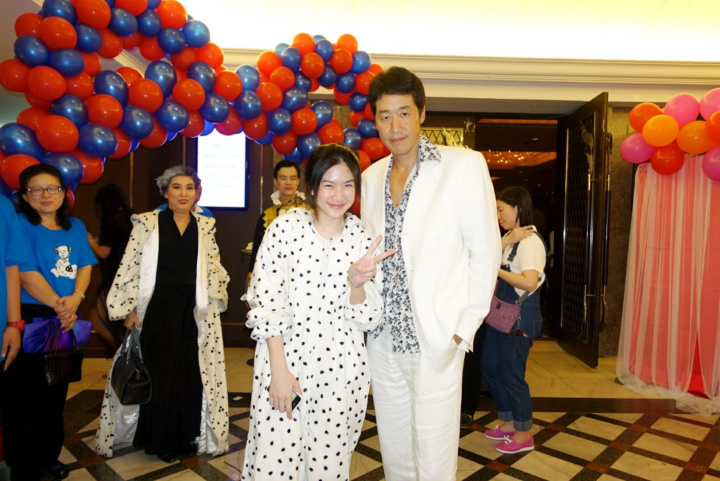
タイ国東京海上火災保険 新年会 2015（WONDERLAND NIGHT PARTY）
2015年3月6日に開催された社員の新年会「Wonderland Night Party」の記録9点。その年のテーマは童話の不思議の国で、バルーンアーチを設けた会場入口での出迎えから始まり、三木晋吉社長が白いスーツで壇上に立って挨拶、各部門の仮装による余興、テーブルごとの記念撮影、魔女のマントをまとった一団のステージ登壇、そして仮装コンテスト入賞者へのROYCE'（ロイズ）チョコレートの贈呈まで。タイ国東京海上火災保険の新年会は2015年から2018年まで本アーカイブに収録しています。ご一緒した方々のお名前は伏せています。
ENNine photographs from the 2015 staff party of Tokio Marine Insurance (Thailand), held on 6 March 2015 under the theme "Wonderland Night Party". The set runs from the balloon arch at the entrance, through Shinkichi Miki addressing the room in a white suit, the performances by each department in costume, table portraits, a large group in witch capes taking the stage, and the presentation of ROYCE' chocolates as prizes to the costume-contest winners. The staff parties of the company from 2015 to 2018 are all held in this archive. The names of those pictured are withheld.
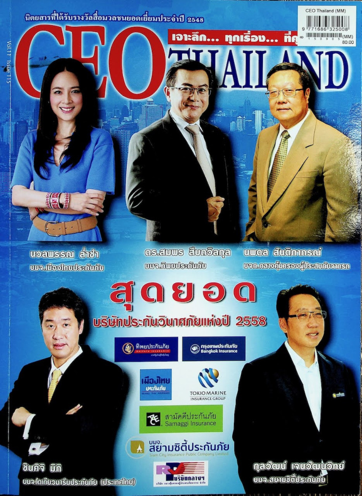
CEO Thailand 誌 Issue 115 表紙特集 タイ国東京海上火災保険 三木晋吉社長
タイのビジネス誌 CEO Thailand Vol.11 Issue 115 の表紙と表紙特集 pp.31-32。「2558年（2015年）の最優秀損害保険会社」特集の表紙に、ムアンタイ、ティップヤ、サイアムシティ各社のトップと並んで登場。本文では損害保険業界トップ3を目指す方針として、2557年（2014年）の直接収入保険料7412百万バーツ・純利益416百万バーツ、2558年は直接収入保険料8.2十億バーツ・10.8%成長の目標を掲げる。運転行動に応じた自動車保険料の見直し、インフラ関連事業への進出、S&PからのA-格付、修理ネットワークの内製化などを語る。あわせて奨学金、水と森の保全プロジェクト、ネパール地震被災者支援といった社会貢献活動を紹介。
ENCover and cover feature, pp. 31-32, in the Thai business magazine CEO Thailand, Vol. 11 Issue 115. Shinkichi Miki appears on the cover alongside the heads of Muang Thai, Dhipaya and Siam City Insurance for a feature on the leading non-life insurers of 2015. Inside, he sets out the aim of becoming one of the top three non-life insurers in Thailand: direct written premium of THB 7,412 million and net profit of THB 416 million for 2014, with a target of THB 8.2 billion and growth above 10.8% for 2015. He discusses pricing motor cover by driving behaviour, entry into infrastructure business, the company's A- rating from S&P, and bringing repair networks in house, alongside community work including scholarships, a water and forest conservation project, and relief for the Nepal earthquake.
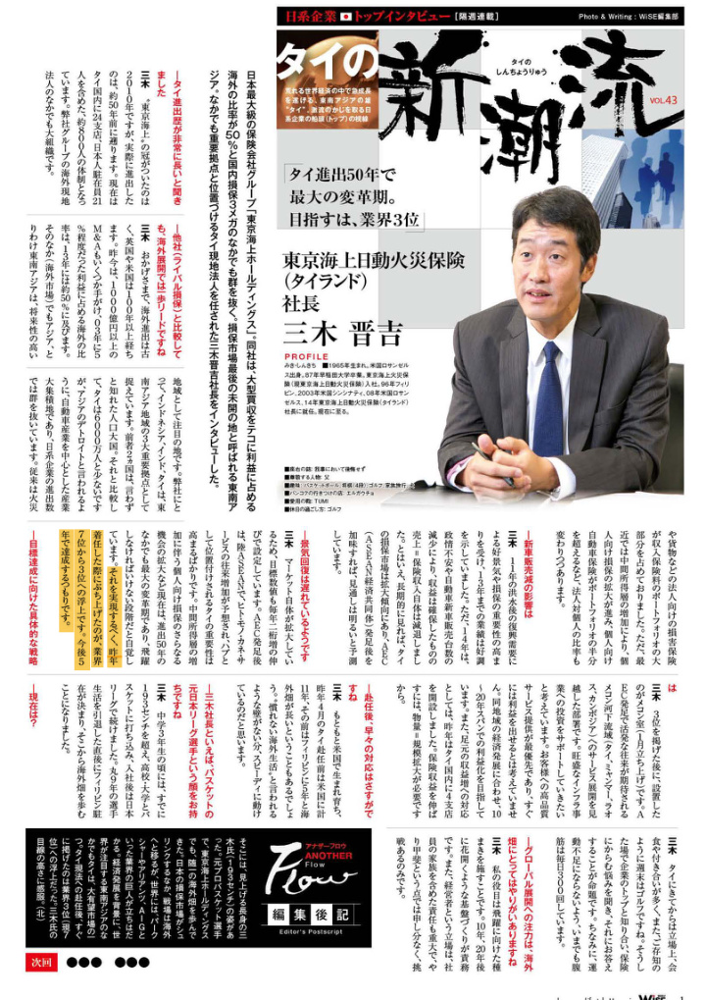
WiSE「タイの新潮流」VOL.43 東京海上日動火災保険（タイランド）社長 三木晋吉
日系企業トップインタビュー連載。「タイ進出50年で最大の変革期。目指すは、業界3位」。タイ国内24支店・日本人駐在員21名を含む約800名体制、インドネシア・インド・タイを東南アジア3大重要拠点とする位置づけ、メコン室の設置とメコン河下流域（タイ・ミャンマー・ラオス・カンボジア）への展開、業界7位から3位への浮上を5年で達成する目標について語る。
ENInterview in WiSE magazine's series on the heads of Japanese companies in Thailand. Shinkichi Miki on the largest period of change in fifty years in the Thai market: a workforce of roughly 800 across 24 branches, Indonesia, India and Thailand as the three key bases in Southeast Asia, a dedicated Mekong unit covering Thailand, Myanmar, Laos and Cambodia, and the goal of moving from seventh to third in the market within five years.
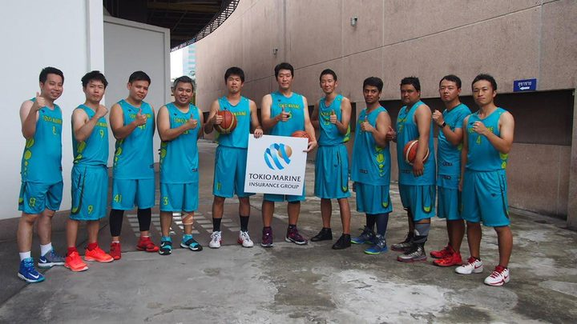
保険会社バスケットボール大会 出場（タイ・2015年）
2015年、タイ国東京海上火災保険 社長在任中に保険会社のバスケットボール大会へ出場した際の記念写真。中央で TOKIO MARINE INSURANCE GROUP の看板を持つ、最も背の高い人物が三木晋吉（左から6人目）。ご一緒した方々のお名前は伏せています。
ENA team photograph from an insurance industry basketball tournament in Thailand in 2015, played while Shinkichi Miki was President of Tokio Marine Insurance (Thailand). He is the tallest figure at the centre, sixth from the left, holding the Tokio Marine Insurance Group board. The names of those pictured are withheld.
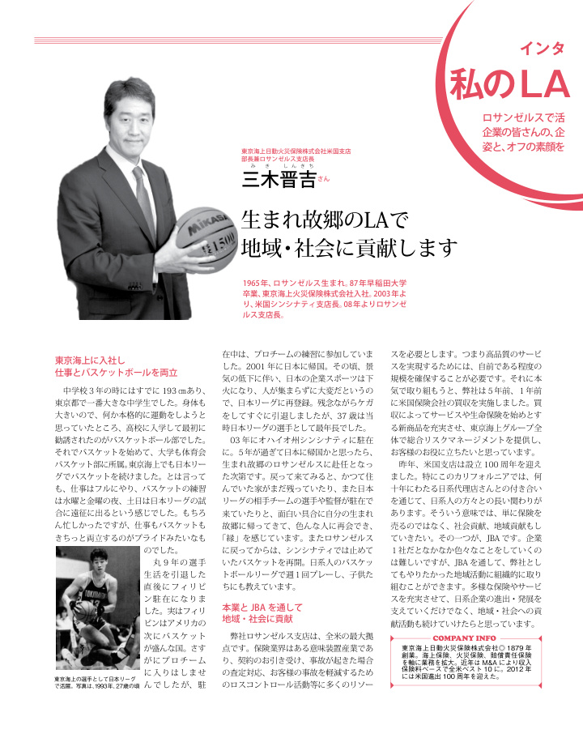
インタビュー「私のLA」生まれ故郷のLAで地域・社会に貢献します
東京海上日動火災保険 米国支店部長兼ロサンゼルス支店長 三木晋吉へのインタビュー。1965年ロサンゼルス生まれ、87年早稲田大学卒業・東京海上火災保険入社、2003年より米国シンシナティ支店長、08年よりロサンゼルス支店長。中学3年で193cm、バスケットボールとの出会いから日本リーグでの9年間、37歳での引退、生まれ故郷LAへの赴任、JBAを通じた地域貢献活動について語る。
ENInterview with Shinkichi Miki, Head of U.S. Branches and Los Angeles Branch Manager for Tokio Marine & Nichido. Born in Los Angeles in 1965, he graduated from Waseda University and joined the company in 1987, became Cincinnati Branch Manager in 2003 and Los Angeles Branch Manager in 2008. He describes reaching 193cm in his third year of junior high, nine years in Japan's national basketball league, retiring from the game at 37, returning to the city of his birth, and community work through the Japan Business Association.
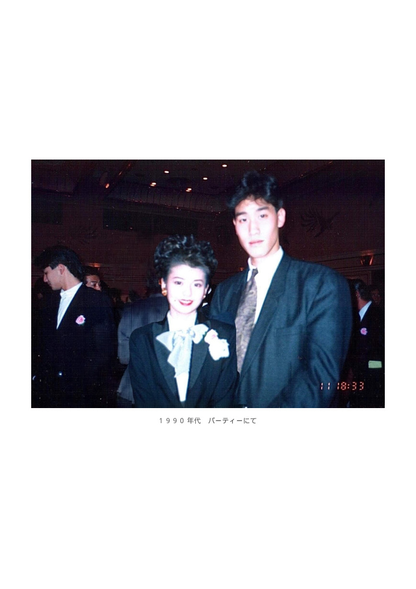
記念写真 1990年代-2010年代
パーティーや会合の折に撮影した記念写真8点。1990年代の東京でのパーティー、および2010年代のロサンゼルス・ビバリーヒルズ駐在時代のもの。ご一緒した方々のお名前は伏せています。
ENEight photographs taken at parties and gatherings: Tokyo in the 1990s, and the Los Angeles and Beverly Hills years in the 2010s. The names of those pictured are withheld.
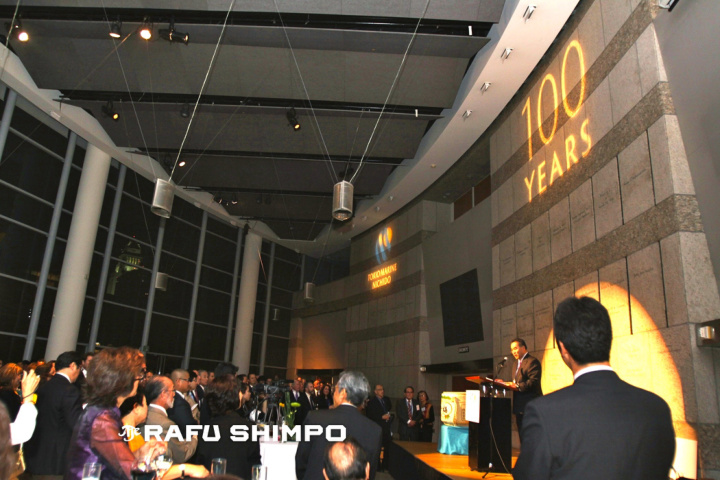
東京海上 米国進出100周年 記念祝賀会（ロサンゼルス・2012年）
2012年2月24日、ロサンゼルスの全米日系人博物館（JANM）で開催された東京海上の米国進出100周年記念祝賀会の記録15点。当時のロサンゼルス支店長 三木晋吉。会場全景、演台での挨拶、JANMへの25,000ドルの寄付目録の贈呈、鏡開きと乾杯、1931年のTIME誌などを収めた歴史展示、記念ケーキの入刀。前半8点は The Rafu Shimpo（羅府新報）撮影、後半6点は別のカメラによるものです。同紙の記事「米国進出100周年で祝賀会：顧客や地元社会に感謝」（2012年3月7日）は本サイトの外部掲載欄からご覧いただけます。ご一緒した方々のお名前は伏せています。
ENFifteen photographs from the celebration marking one hundred years of Tokio Marine in the United States, held at the Japanese American National Museum in Los Angeles on 24 February 2012. Shinkichi Miki was then Los Angeles Branch Manager. The set covers the hall, remarks from the podium, the presentation of a USD 25,000 donation to the museum, the sake-barrel opening and toast, a display case of historical material including a 1931 issue of TIME, and the cutting of the anniversary cake. The first eight are by The Rafu Shimpo; the remainder are from another camera. The paper's report of 7 March 2012 is linked in the external coverage section of this site. The names of those pictured are withheld.
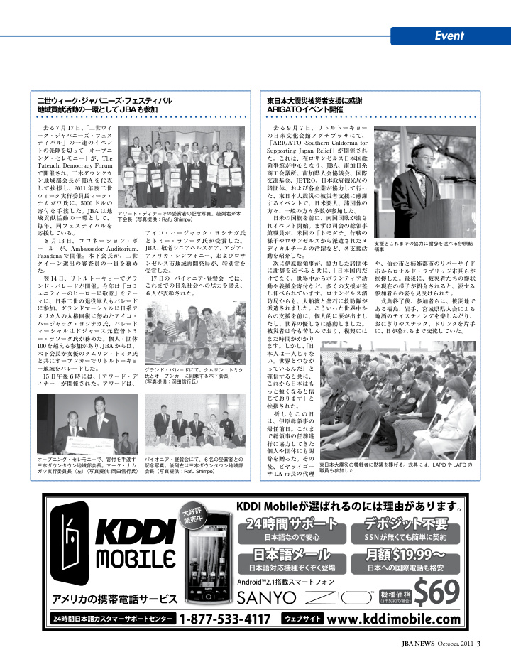
JBA NEWS 2011年10月号「二世ウィーク・ジャパニーズ・フェスティバル／ARIGATOイベント」
南加日系商工会議所（JBA）会報。三木ダウンタウン地域部会長がJBAを代表して二世ウィーク開会式で挨拶し、実行委員長マーク・ナカガワ氏へ5000ドルを寄付。あわせて東日本大震災被災者支援への感謝イベント「ARIGATO -Southern California for Supporting Japan Relief」（在ロサンゼルス日本国総領事館主催・日米文化会館ノグチプラザ）を報じる。
ENNewsletter of the Japan Business Association of Southern California. Miki, as chair of the downtown chapter, spoke on behalf of the JBA at the opening ceremony of Nisei Week and presented a $5,000 donation to the festival's chairman, Mark Nakagawa. The issue also reports on "ARIGATO — Southern California for Supporting Japan Relief," hosted by the Consulate General of Japan in Los Angeles at Noguchi Plaza.
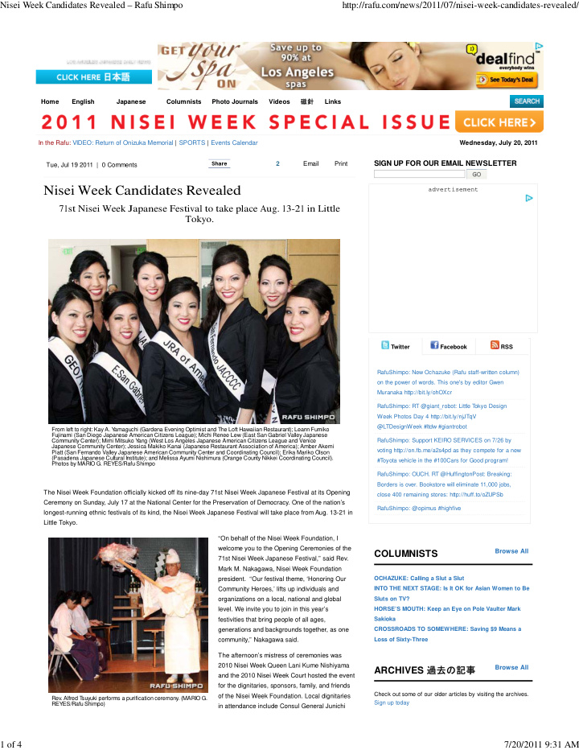
The Rafu Shimpo 2011年7月19日「Nisei Week Candidates Revealed」
ロサンゼルスの日系紙 羅府新報の記事。第71回二世ウィーク日本祭（2011年8月13-21日・リトルトーキョー）開会式の報道。Japan Business Association（JBA）を代表し三木晋吉が二世ウィーク財団のMark Nakagawa会長に5000ドルの寄付を贈呈した写真を掲載。
ENArticle in The Rafu Shimpo, the Japanese American newspaper of Los Angeles, covering the opening of the 71st Nisei Week Japanese Festival in Little Tokyo, 13-21 August 2011. The page carries a photograph of Shinkichi Miki presenting a $5,000 donation on behalf of the Japan Business Association to Nisei Week Foundation president Mark Nakagawa.
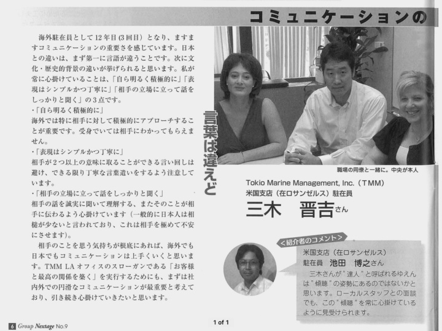
Group Nextage No.9「コミュニケーション 言葉は違えど」TMM米国支店ロサンゼルス駐在員 三木晋吉
東京海上グループ社内報 Group Nextage 第9号 p.6。Tokio Marine Management, Inc.（TMM）米国支店（在ロサンゼルス）駐在員として、海外駐在12年目・3回目を迎えた立場から異文化コミュニケーションを語る。心掛けている3点として「自ら明るく積極的に」「表現はシンプルかつ丁寧に」「相手の立場に立って話をしっかりと聞く」を挙げ、TMM LAオフィスのスローガン「お客様と最高の関係を築く」に触れる。紹介者の池田博之氏は三木の「傾聴」の姿勢をコメント。職場の同僚との写真を掲載。
ENPiece in Group Nextage No. 9, p. 6, the internal magazine of the Tokio Marine Group. Writing as a Los Angeles-based employee of Tokio Marine Management, Inc. (TMM) in his twelfth year abroad across three postings, Miki sets out three things he keeps in mind when working across cultures: approaching others openly and actively, keeping expression simple and courteous, and listening from the other person's position. He connects these to the TMM Los Angeles office slogan of building the best possible relationship with clients. A colleague's comment describes his habit of listening closely.
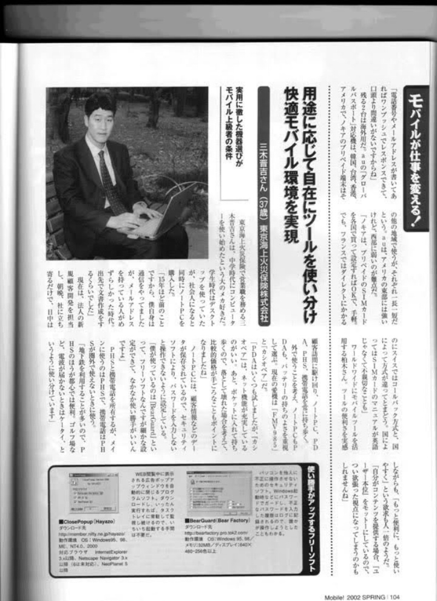
Mobile! 2002年春号「モバイルが仕事を変える！」用途に応じて自在にツールを使い分け
モバイル情報誌 Mobile! 2002年春号 p.104 の特集記事。東京海上火災保険 三木晋吉（37歳）が、上級者のモバイル環境について語る。中学時代からコンピュータに親しみ、学生時代にノートPCとメールアドレスを同時に入手。PDA・ノートPC・携帯電話を顧客訪問や移動の場面ごとに使い分ける手法、海外出張時のSIMカード運用、セキュリティへの配慮などを紹介。あわせてフリーソフト ClosePopup、BeerGuard を掲載。
ENFeature in the Japanese magazine Mobile!, spring 2002 issue, p. 104. Shinkichi Miki, then 37 and working for Tokio Marine, describes an advanced mobile working setup: familiarity with computers since junior high, acquiring a laptop and an email address as a student, and switching between PDA, laptop and mobile phone according to whether he is visiting clients or travelling, along with SIM card use on overseas trips and his approach to security.
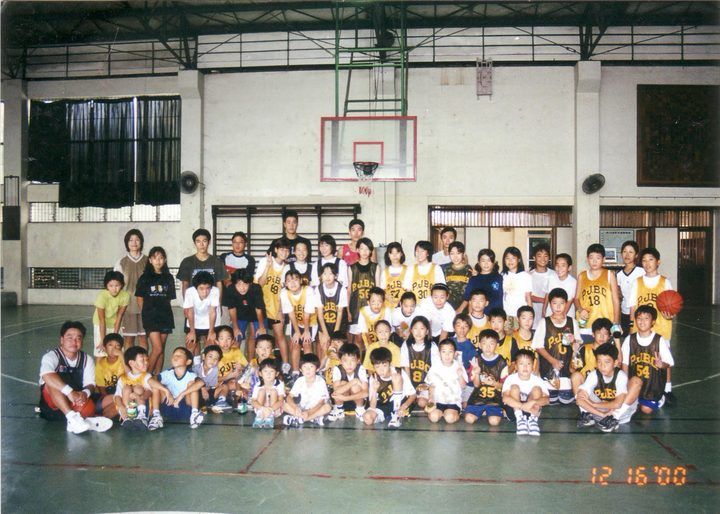
マニラ日本人学校でのバスケットボール指導（2000年）
2000年12月16日、フィリピン駐在時にマニラ日本人学校で子どもたちにバスケットボールを指導した際の記念写真。後列左手、黒いTシャツを着た最も背の高い人物が三木晋吉。本アーカイブの競技歴に収めた The Daily MANILA SHIMBUN 1997年11月26日の記事でも、スポーツを通じた日比交流の取り組みが紹介されています。ご一緒した方々のお名前は伏せています。
ENA group photograph taken on 16 December 2000 at the Manila Japanese School, where Shinkichi Miki coached basketball for the children during his posting to the Philippines. He is the tallest figure at the back left, in a black T-shirt. The article in The Daily Manila Shimbun of 26 November 1997, also held in this archive, describes his work on Japan-Philippine exchange through sport. The names of those pictured are withheld.
バスケットボール競技歴 1986-1997（早稲田大学・東京海上・マニラ）
バスケットボール選手時代の資料8点。第44回早慶バスケットボール定期戦（1986年6月15日 早稲田大学記念会堂）プログラム表紙。早稲田大学バスケットボール部 強化リーグB-1 選手名鑑（背番号7・センター・192cm・商学部・早大学院出身「シュート。走るセンターとして期待」）。日本リーグ（現Bリーグ）東京海上ビッグブルー 選手名鑑2年度分（背番号13・193cm・85kg・ロサンゼルス出身・杉並区立高井戸第三小→杉並区立向陽中→早稲田大学高等学院→早稲田大学、1991年は平均年齢27.6歳・平均身長187.5cmのチーム）。日本リーグ（現Bリーグ）の戦評およびスコア一覧2点。The Daily MANILA SHIMBUN 1997年11月26日「ひと交差点」日本人フィエスタのバスケで活躍・スポーツ通し日比交流に努力。
ENEight items from his playing years. The programme cover for the 44th Waseda-Keio basketball fixture, 15 June 1986. A Waseda University squad listing (No. 7, centre, 192cm, School of Commerce). Two seasons of squad listings for Tokio Marine Big Blue in Japan's national league, the forerunner of today's B.LEAGUE (No. 13, 193cm, 85kg, born in Los Angeles; the 1991 side averaged 27.6 years and 187.5cm). League match reports and two pages of scores. And an article in The Daily MANILA SHIMBUN, 26 November 1997, on his play at a Japanese community fiesta in the Philippines and his work on Japan-Philippine exchange through sport.
三木晋吉 東京海上ビッグブルー 背番号13（日本リーグ・1991年）
日本リーグ（現Bリーグ）東京海上ビッグブルー、1991年の一戦。ボールを競る背番号13が三木晋吉。同チームでの背番号13は競技歴の選手名鑑にも記載があります。月刊バスケットボール掲載。
ENA contested rebound in a 1991 match played by Tokio Marine Big Blue in Japan's national league, the forerunner of today's B.LEAGUE. The player wearing No. 13 is Shinkichi Miki; the squad listings in the career PDF record him at that number. Published in Monthly Basketball (月刊バスケットボール).
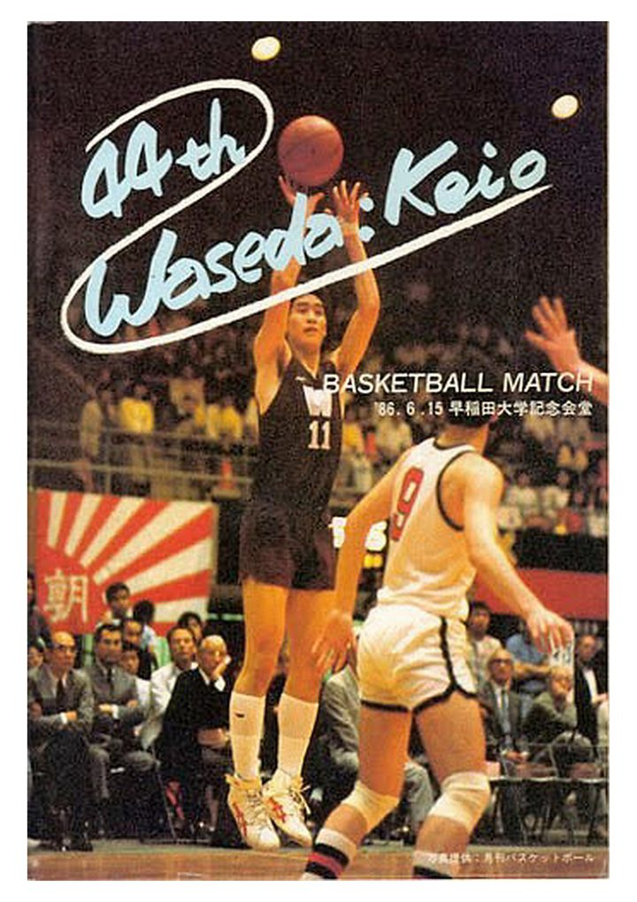
三木晋吉 早稲田大学バスケットボール部（第44回早慶戦・1986年）
第44回早慶バスケットボール定期戦（1986年6月15日 早稲田大学記念会堂）のプログラム表紙。シュートを放つ背番号11が早稲田大学バスケットボール部の三木晋吉。表紙写真は月刊バスケットボール提供。競技歴のPDFにも同じ表紙を収めていますが、画像として探せるよう独立して掲載しています。
ENCover of the programme for the 44th Waseda-Keio basketball fixture, played at the Waseda University Memorial Hall on 15 June 1986. The player shooting, No. 11, is Shinkichi Miki of the Waseda University basketball team. Cover photograph courtesy of Monthly Basketball. The same cover appears in the career PDF; it is published here separately so that it can be found as an image.
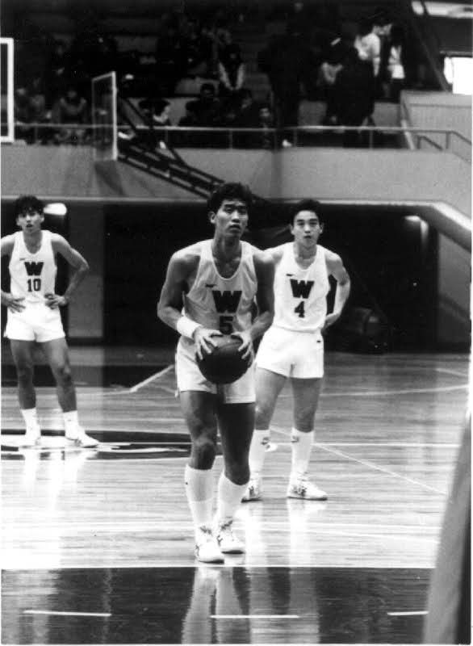
三木晋吉 早稲田大学バスケットボール部 背番号5（大学4年時・1986年）
早稲田大学バスケットボール部4年時、フリースローを放つ背番号5が三木晋吉。1986年（大学4年時）。月刊バスケットボール掲載。撮影日および大会名は確認できていません。ご一緒した方々のお名前は伏せています。
ENShinkichi Miki, No. 5, at the free-throw line in his fourth year with the Waseda University basketball team, 1986. Published in Monthly Basketball (月刊バスケットボール). Neither the exact date nor the competition has been confirmed. The names of those pictured are withheld.
該当する資料がありません。条件を変えてみてください。